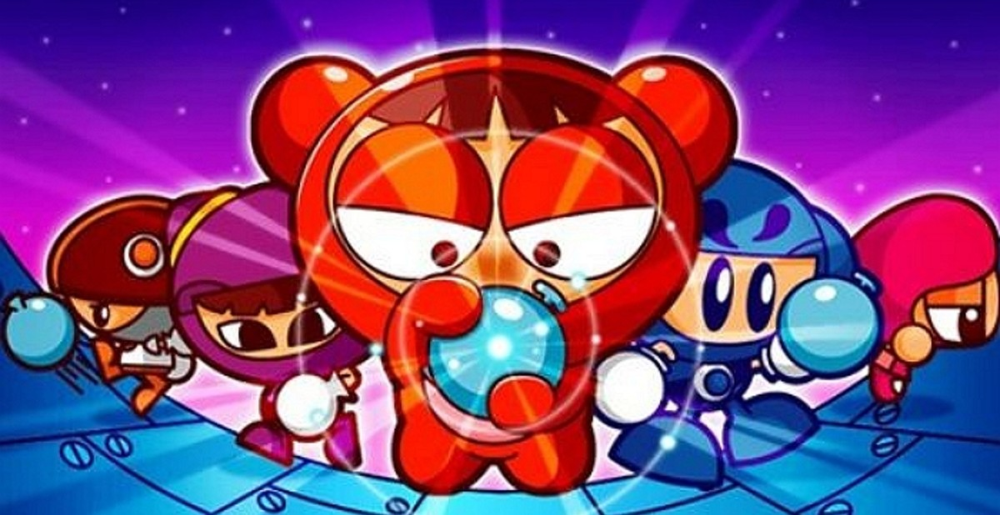
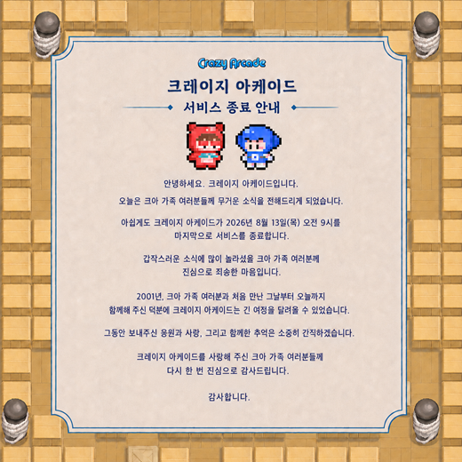
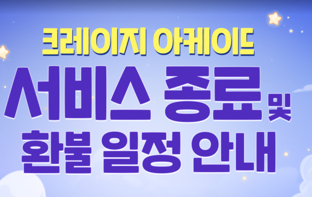
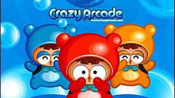

크레이지 아케이드(크아) 서비스 종료, 환불 신청 언제까지 어떻게 하나요 (25년 연표 정리)
안녕하세요, 영원한도시입니다.
학창 시절 PC방 한 구석에서 물풍선 하나로 친구를 벽에 가두고 방방 뛰던 기억, 다들 한 번쯤 있으실 텐데요. 그 '크레이지 아케이드'가 2026년 8월 13일 목요일 오전 9시부로 서비스를 종료했습니다. 2001년 10월 16일에 문을 연 뒤로 약 24년 10개월 만인데요, 언론에서는 연도 차이만 따져서 보통 '25년'이라고 부르더라고요.
오늘 이 글에서 제일 먼저 챙기셔야 할 건 이거 하나입니다. 환불 신청은 자동으로 처리되지 않습니다. 넥슨ID로 로그인해서 직접 신청해야 받을 수 있고요, 접수는 2026년 6월 11일 목요일부터 이미 시작돼서 지금 이 글을 쓰는 시점에도 접수 기간 안입니다. 마감은 2026년 9월 16일 수요일 밤 11시 59분까지고요. 기간이 넉넉해 보여도 신청 자체를 깜빡하면 못 챙기는 구조라, 아래 표랑 체크리스트로 한 번에 정리해 드릴게요.

보시면 크아 하면 바로 떠오르는 다오ㆍ배찌 무리인데요, 이제 이 화면도 추억으로만 남게 됐네요.
이미지 출처: 인사이트 보도 게재 이미지 · 네이버 본문엔 받아서 재업로드 권장
1. 크레이지 아케이드가 걸어온 25년
짧게 요약하면, 크아는 2001년에 태어나 2026년에 문을 닫은 넥슨의 최장수 게임 중 하나입니다.
| 시점 | 있었던 일 |
|---|---|
| 2001.10.16 | 국내 첫 서비스 시작 |
| 2002년 | 최고 동시접속자 35만 명 기록 |
| 2006년·2008년 | 동시접속자 10만 명대 기록 |
| 2026.08.13(목) 09:00 | 서비스 종료 |
| 서비스 총 기간 | 약 24년 10개월 (언론 표기 기준 '25년') |
날짜로 딱 맞춰 세면 25주년을 두 달 남짓 앞두고 종료된 셈인데요, 기사들이 '25년'이라고 뭉뚱그려 부르는 게 틀린 표현은 아니지만 정확히는 24년 10개월이라는 점, 검색하다 헷갈리실까 봐 짚고 갈게요.
크아 인기가 커지면서 2004년엔 '카트라이더'가, 2008~2009년엔 '크레이지슈팅 버블파이터'가 잇따라 나왔는데요, 이 라인업이 지금까지 이어지는 '크레이지파크' IP의 뿌리가 됐다고 하죠. 방향키로 움직이고 물풍선만 내려놓으면 누구나 바로 시작할 수 있던 간단한 조작이 오래 사랑받은 비결이었던 것 같아요.
종료 배경도 짚고 가면, 넥슨은 공지에서 "앞으로 만족스러운 서비스를 지속적으로 제공하기 어렵다고 판단해 결정했다"고 밝혔습니다. 다만 업계에서는 패트릭 쇠더룬드 회장 취임 이후 수익성ㆍ성장성을 우선하는 넥슨의 경영 기조 변화와 맞물린 결정이라는 분석도 나오더라고요.

지금 보시는 게 크아 게임 안에 실제로 떴던 종료 안내문이에요. "2001년, 크아 가족 여러분과 처음 만난 그날부터"로 시작하더라고요.
이미지 출처: 데일리안 보도 게재 이미지 · 네이버 본문엔 받아서 재업로드 권장
2. 환불, 언제까지 어떻게 신청하나
환불은 넥슨ID로 로그인한 뒤 공식 환불 페이지(ca.nexon.com/refund)에서 [환불 신청하기] 버튼을 직접 눌러야 받을 수 있고, 접수 마감은 2026년 9월 16일(수) 오후 11시 59분입니다.
주인장이 이 페이지를 직접 열어봤는데, 넥슨ID 로그인 화면부터 뜨더라고요. 세부 유의사항은 텍스트가 아니라 이미지로 안내돼 있어서 로그인 전에는 자세한 조건까지는 확인이 안 됐어요. 그래서 아래 표는 아주경제ㆍ스페셜타임스 보도로 확인된 범위까지만 정리했고, 세부 조건은 공식 페이지에서 직접 확인하시길 추천드립니다.
| 구분 | 기간 | 환불 대상 |
|---|---|---|
| ① | 2026.03.11(수) 09:00 ~ 2026.06.11(목) 09:00 | 이 기간에 유료 넥슨캐시로 구매한 모든 상품 (아이템 사용 여부 무관, 전액) |
| ② | 2025.06.11(수) 09:00 ~ 2026.03.11(수) 08:59 | (a) 이 기간에 구매했지만 임시보관함에서 안 꺼낸 상품 (b) 꺼내서 쓰다 남은 소모성ㆍ기간제ㆍ캡슐형 아이템(잔여 수량·일수 일할 계산) |
여기서 하나 꼭 짚고 넘어갈 게 있는데요, ②구간은 임시보관함에서 안 꺼낸 상품만 해당되는 게 아니라, 꺼내서 쓰다가 남은 소모성ㆍ기간제ㆍ캡슐형 아이템도 포함됩니다. 이 기간에 산 기간제 아이템을 며칠 쓰다 만 상태라면 남은 일수만큼 일할 계산해서 환불해 주는 방식이에요. "난 다 안 꺼냈으니까 대상 아니네" 하고 표만 보고 넘기지 마시고, 일부만 쓴 경우도 해당된다는 점 꼭 챙기세요.
| 항목 | 내용 |
|---|---|
| 접수 기간 | 2026.06.11(목) ~ 2026.09.16(수) 23:59 |
| 신청 방법 | 넥슨ID 로그인 → ca.nexon.com/refund → [환불 신청하기] 클릭 (자동 진행 안 됨) |
| 지급 시기 | 2026년 10월부터 순차 지급 |
| 지급 수단 | 현금이 아니라 넥슨캐시 |
여기서 많이들 헷갈리시는 부분인데요, 환불금은 현금이 아니라 넥슨캐시로 돌아옵니다. 통장에 바로 꽂힌다고 생각하시면 곤란해요.
신청 절차만 딱 추리면 이렇습니다.
- 1) 넥슨ID로 로그인
- 2) 공식 환불 페이지(ca.nexon.com/refund) 접속
- 3) 안내 확인 후 [환불 신청하기] 버튼 클릭
- 4) 2026년 10월부터 넥슨캐시 지급 대기
필요 서류가 따로 있는지는 저도 확인이 안 됐어요. 로그인하면 본인 케이스에 맞는 안내가 뜰 테니, 그때 공식 페이지에서 직접 확인하시는 게 제일 정확합니다.🔍 필요 서류 여부 미확인

"서비스 종료 및 환불 일정 안내" — 딱 이 제목 그대로, 신청은 셀프로 챙기는 구조예요.
이미지 출처: 아주경제 보도 게재 이미지 · 네이버 본문엔 받아서 재업로드 권장
3. BnB는 캐릭터 이름이 아니에요
BnB는 다오나 배찌 같은 캐릭터 이름이 아니라, 물풍선을 던져 상대를 가두는 게임 모드 이름입니다.
나무위키 문서를 보면, 서비스 전 가제는 폭탄을 쓰는 'Bomb n Bomber'였다가, 봄버맨과 너무 닮았다는 논란을 의식해 물풍선으로 바꾸고 이름도 '버블 앤 버블(Bubble and Bubble)', 줄여서 BnB로 정착했다고 나와 있더라고요. 다만 이건 위키 문서 기준 설명이고 넥슨이 공식적으로 못박은 어원은 아니라는 점은 짚고 갈게요.🔍 넥슨 공식 어원 미확인
4. PC방에서 하셨다면
PC방에서 정량을 구매해 운영하셨다면, 서비스 종료 전까지 크아가 무료로 전환됐고 남은 정량은 수수료 없이 환불 신청할 수 있습니다.
넥슨은 서비스 종료 전까지 크아를 PC방에서 무료로 이용할 수 있게 전환했고, 이 기간에는 개별 정량 구매나 패키지 정량 선택 자체가 막혀 있었다고 해요. 기존에 정량을 사둔 PC방은 환불 신청이 가능하고, 이때 수수료는 붙지 않는다고 아이러브PC방이 보도했습니다.

PC방에서 만나던 그 로고, 이제 진짜 안녕이네요.
이미지 출처: 아이러브PC방 보도 게재 이미지 · 네이버 본문엔 받아서 재업로드 권장
5. 자주 묻는 질문
Q. 크레이지 아케이드 환불 신청은 언제까지 하나요?
A. 2026년 9월 16일(수) 오후 11시 59분까지입니다. 접수는 6월 11일부터 이미 시작됐고, 마감을 넘기면 신청할 수 없습니다.
Q. 필요 서류가 따로 있나요?
A. 공식적으로 확정된 서류 목록은 확인되지 않았습니다. 넥슨ID로 로그인한 뒤 뜨는 개인별 안내를 그대로 따르시면 됩니다.
Q. PC방에서 정량 구매했는데 환불은 어떻게 받나요?
A. 일반 이용자와 별도로, 정량을 구매한 PC방은 수수료 없이 환불 신청이 가능합니다.
Q. 결제한 건 전부 다 환불되나요?
A. 아니요. CP(캐시포인트)나 무료로 받은 넥슨캐시로 결제한 내역은 환불 대상에서 제외됩니다.
참고한 곳
· 넥슨 공식 환불 안내(ca.nexon.com/refund)
· 아주경제 — "넥슨 '크레이지 아케이드', 25년 만에 서비스 종료"
· 스페셜타임스 — 크레이지 아케이드 환불 일정 보도
· 인벤 — 크레이지 아케이드 환불 대상·CP 제외 조항 보도
· 데일리안 — 크레이지 아케이드 종료 배경·역사 보도